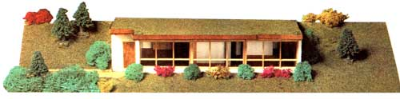
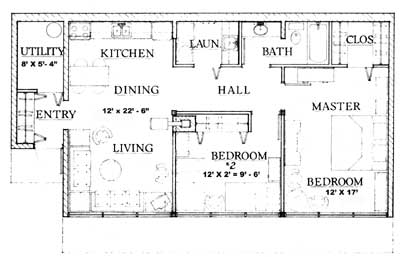
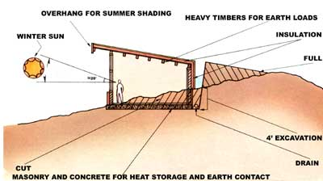
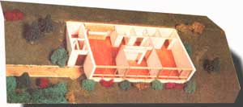
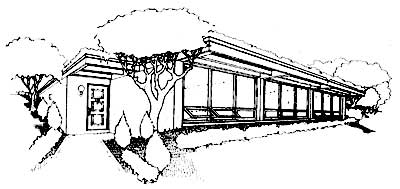

Follow an architect as he leads us through the planning, pouring, and pounding involved
in . . .
All too many of us have found that building an energy-efficient home seems to be a dream ... a fantasy that's kept just out of reach by escalating prices and high interest rates. And, as if the cost of building weren't enough of a hindrance, some of the funds that might otherwise be saved toward paying that price often end up being spent on energy to keep our "old" houses comfortable. Of course, MOTHER has long been exploring ways to break this vicious circle of waste ... and one inventor of solu tions, whose work we've shown you before, is architect Angus W. Macdonald.
Those of you who missed our previous articles about Angus and his work (see issues 67 and 74) will be interested to learn that the innovative architect was educated at Yale University and holds a master's degree from the Yale School of Architecture. After spending eight years developing low-cost buildings in Jamaica, he returned to his native Virginia. . . where he now practices passive solar architecture in the town of Orange.
Macdonald has developed a number of designs that apply low-cost building techniques to passive solar, earth-tempered homes ... and he's agreed to relate, in a series of articles that will span at least six issues of MOTHER, much of what he's learned about planning and building such structures. We'll cover the complete process of home construction ... from site selection (in this article) all the way through excavation, drainage, building walls, insulating, waterproofing, and interior finishing ... and every installment will be written to help the builder who's on a tight budget.
By the end of the series, then, you should have the basic information necessary to put up your own energy-efficient home at a rock-bottom price. In fact, we'll illustrate the whole process with photos of the construction of a passive ive solar, earth-tempered home-described in the sidebar entitled "About the Sun Cottage Modular"-that qualifies for FHA or VA fi nancing ... and costs only $20 per square foot to build!
When you're shopping for a piece of property on which to build a passive solar home, keep your wits about you and look both up and down: Be mindful of the sky and the earth... after all, the marriage of proper sunlight, terrain, and soil will be crucial to the ease of construction and to the performance of the finished residence.
SLOPE
To save money on excavation and insure adequate drainage, it's best to build earthtempered housing on sloping ground. However, the hillside in question need not be steep ... in fact, too great a slope can prove ,to be a bigger problem than none at all. An 'ideal site (in my opinion) will have the floor level, at the back wall, about 4 feet below the existing grade, so try standing where the front of your future home might be and imagining the location of the rear of the building-to-be.
A 4-foot-deep excavation will usually produce enough leftover subsoil to berm up the back wall to its full 8-foot height, and enough topsoil to cover the roof. In addition, the earth piled-above grade-against the rear will help direct rainwater away from the building.
On the other hand, if you can't find an "ideal" piece of land-or if you already own property that doesn't qualify-you can build the same house above grade and increase the insulation values of the roof and of all walls but the south one. You'll end up paying extra for insulation, but you should save more than that by avoiding the costs of the heavy structure needed to handle earth loads, and the expense of a deep excavation. Better still, by doing so, you can escape the problems of dealing with what will usually be difficult waterproofing situations.
WATER IN THE WRONG PLACES
Sloping terrain will generally be well drained, but you should inspect it carefully for any signs of ground water. Dry months are particularly good times to perform the examination, because plants that are sipping a subsurface water source (which could become an active above-grade spring if you dig) will show vitality while others in the same area will be suffering.
Of course, even if you're going to build above ground, it's a good idea to avoid marshy land or that which is at the bottom of a valley. You should also check with the U.S. Geologic Survey office in your area to find out if the property you're considering is in a flood zone. (Sometimes that hazard isn't as easy to spot as you'd think.)
ORIENTATION
Obviously, it's best for a solar home to face south, but don't panic if an attractive section of ideally sloping ground is a little off compass perfect. A 20° variation from true south, in either direction, will cut solar gain by only 10%, so there is flexibility on this point. (However, when you visit a piece of property, do tote along a compass.)
SUN ANGLES AND SHADING
To take full advantage of the sun's heat, your home-to-be must not be tree-shaded (and particularly not by evergreens) in the winter. A general rule of thumb, for the middle latitudes of the United States, is that the sun's path will average about 18° to 20° above the horizon on December 21 (the "shortest" day of the year). The angle at noon will be much greater at most locations in the country, but you should use the smaller angle to insure that the site will receive solar gain throughout the day.
A crude study of the sun's angles, nearby hills, trees you wouldn't want to cut, or other buildings at your prospective site may show that there's little danger of winter shading. But if you have any doubt, consult charts-or use a solar planning card-to establish the sun's path more exactly, since any of the previously mentioned factors might force you to move your homesite.
Trees that branch directly over the potential building area may prove to be real assets, though. Because the sun's path in the sky is highest in the summer months, the limbs may shade the house during hot weather without interfering with solar gain during the winter. As a matter of fact, I consider a site backed against the southern edge of a grove of trees to be a particularly good choice.
SUBSOIL MAKEUP
An earth-tempered home will be much less likely to have water leakage problems if the subsoil has good permeability. Clay, for instance, holds water and is the least desirable type of earth on which to build an underground structure. Sand, on the other hand, drains well but won't provide enough stability for the dwelling. An ideal subsoil, then, will have some of each ... and the only way to find out what you have is to dig down and see. I recommend taking a shovel on a site visit so that you van cut through the topsoil and examine what 's below - (The health inspector may also provide some help, if he or she comes to check the lot's suitability for a septic system.)
CONVENTIONAL CONSIDERATIONS
Some of the more obvious prerequisiteswhich apply to any good building site-are a view, access to roads and existing powerlines, a water supply, and waste disposal (whether it's handled by a sewer, a septic system, or some alternative). The first two conditions are easy to determine by inspection, but water and sewage disposal deserve more careful examination. Independent water supplies (deep wells or capped springs) should be located uphill -and well away-from the septic disposal field or sewer ... so, to some extent, the two systems must be planned at the same time. Your neighbors-to-be should be able to tell you what was required to find water on their property, but you still might want to make the purchase of the land dissentient upon finding 'it at a reasonable depth. In fact, it's not unusual to make a down pay ment on a lot and then withhold the balance until the well is successfully drilled.
You should also have the health inspector examine the property to establish whether-and where-a septic drainage field can be located, if this will be your method of handling waste. Without the health inspector's approval, you won't be able to get a building permit. And, because soil type can make such a difference in drainage requirements, the inspector will often take core samples to determine both the size of the field required and the optimum siting. (As previously noted, this procedure may also help you determine the suitability of the land for earth sheltering.)
Furthermore, though it has nothing to do with the land itself, the availability of a mortgage, with reasonable interest, from either the seller or a bank could provide an important incentive for choosing one lot over another. And, whether or not the tendet requires them, you should, exercise the safeguards of Title Search and Boundary Surveys. Once these have been completed, you can be sure that there are no restrictive covenants or title disputes that might later prohibit you from developing the land.
To recap the most important points we've covered thus far, a suitable location for a passive solar, earth-tempered house will have a gently sloping hillside that faces more or less to the south ... will be on a dry area out of the valley or nearly on the crest ... will have an assured water supply ill have an approved site for a drain ... w age field ... and will provide reasonable access to roads and powerlines. All of these considerations should add up to a feeling of rightness when you finally do find the place for your home.
EDITOR'S NOTE: A catalog of Angus Macdonald's standard designs for Iow-cost passive solar homes is available, for $5.00, from Survival Consultants, Dept. TMEN, P.O. Box 21, Rapidan, Virginia 22733. Complete plans, specifications, and cost analyst's for the Sun Cottage Modular-which we'll be describing in these articles-are also available from the firm, for $100.
The series of articles that commences with this selection on choosing property will be centered on Angus, Macdonald's design called the Sun Cottage. In its basic form, the modular has one bedroom, encloses 720 square feet of living area, and has an estimated construction cost of only $17,500. The version MOTHER will be keeping an eye on, however, has a second bedroom on the east end... to give it 1, 023 square feet. By simply adding another room to the east, the floor space can be expanded to a full 1, 300 square feet.
Because of the home's modular design, preparing to build the extra rooms involves merely adding new oak post-and-beam set ments and extending the concrete retaining walls. Thus you can start out with the amount of home you need and are able to afford, and add to it later when space demands increase and/or funds become available.
Some of the construction aspects we'll be demonstrating in our series on the Sun Cottage Modular include creating a workable drainage system... building reinforced retaining walls... putting together a precutand-pegged oak post-andbeam structure... applying foam insulation... and laying on a reinforced Plastic waterproofing membrane.
By the end of the series, we'll be able to show you a completed $20-per-square-foot home that-through the grace of the sun's warmth and the tempering effect of the earth-will maintain nearly the same internal temperature year round... with next to no backup heating or cooling!
|
 |
 |
 |
|
 |
 |
|